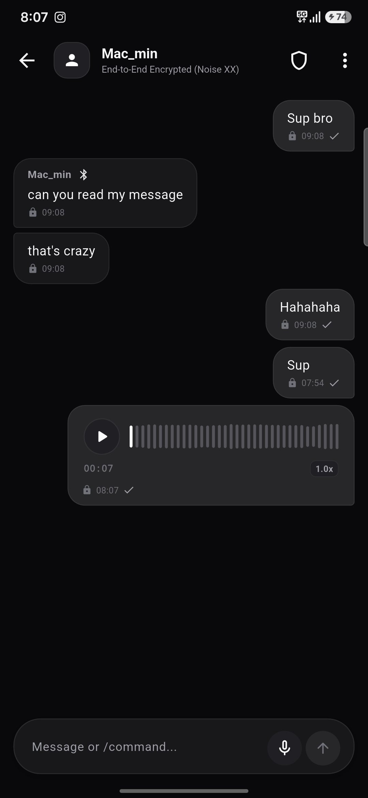

Grid turns your smartphone and laptop into an autonomous, self-healing mesh node. Transmit encrypted chats, exchange verified keys, and send push-to-talk voice notes directly over Bluetooth Low Energy and Nostr relays—with zero central servers, zero accounts, and zero cellular towers.

Experience how Grid transports encrypted packets peer-to-peer over Bluetooth Low Energy. Cut the internet connection to test offline resilience, or dispatch a physical courier mule across an air gap.
Every layer of Grid is built from the silicon up to protect communication when institutions, infrastructure, and cellular networks fail.
Communicate completely off the internet. Grid forms an ad-hoc, self-healing mesh topology directly over Bluetooth Low Energy (2.4 GHz). Packets hop across intermediate nodes with degree-based TTL clamping (7 ➔ 5), 1000-entry LRU deduplication, randomized relay jitter (10–220ms), and split-horizon filtering.
High-utility walkie-talkie audio over low-bandwidth mesh. Voice is compressed using low-bitrate Opus (~1.5 KB per 5s snippet), sliced into sliding-window wire fragments, and delivered across BLE with real-time waveform playback.
No phone numbers, no emails, no logins, no metadata harvesting. Your dual Curve25519 (X25519) and Ed25519 cryptographic keypairs generated entirely on-device are your sole identity. Verify peers via 60-digit safety numbers.
Mutual authentication with cryptographic forward secrecy. Built using the formal
Noise_XX_25519_ChaChaPoly_SHA256 handshake pattern with 1024-bit sliding-window replay protection.
Intermediate relay nodes cannot inspect or tamper with message contents.
Local BLE mesh seamlessly bridges to the global decentralized Nostr relay network whenever an internet connection is available. Reach mutual contacts across continents through censorship-resistant WebSocket relays without leaking metadata.
In tactical duress or emergency scenarios, every millisecond counts. Grid's Panic Wipe triggers immediate cryptographic key shredding, volatile memory scrubbing, and disk storage zeroization with zero confirmation dialog delay. The application instantly resets to a clean state, leaving zero forensic trace.
Test our tactile in-bubble audio player. Interactive micro-waveform, variable speed playback, and fragmented BLE wire transmission.
Standard voice apps consume megabytes per voice message. Grid slices voice into compact
MessageType.voice packets compressed via Opus at 8 kbps, fitting inside raw
469-byte BLE MTU frames.
Hover over individual byte fields to inspect the wire format. Grid is 100% open, transparent, and unencumbered.
Protocol identifier 0xBC. Identifies the frame as a genuine BitChat packet. Packets missing this magic byte are immediately dropped.
Mutual 3-message cryptographic handshake authenticates both parties without exposing identity keys in cleartext.
Ensures large media frames safely traverse low-MTU Bluetooth Low Energy characteristics with automatic packet deduplication.
How Grid compares to mainstream messengers and traditional off-grid platforms.
| Feature | GRID | Signal | Telegram | Meshtastic | |
|---|---|---|---|---|---|
| Operates with Zero Cellular / Internet | ✓ YES (BLE Mesh) | ✗ No | ✗ No | ✗ No | ✓ YES (LoRa Radio) |
| Requires Central Servers | ✓ ZERO SERVERS | ✗ Yes (AWS / Central) | ✗ Yes (Central) | ✗ Yes (Meta Servers) | ✓ Zero Servers |
| Requires Phone Number or SIM Card | ✓ NO (Keypair Only) | ✗ Yes | ✗ Yes | ✗ Yes | ✓ No |
| Push-to-Talk Voice Notes Off-Grid | ✓ YES (Opus Slicing) | ✗ No | ✗ No | ✗ No | ✗ No (Text only) |
| Instant Panic Wipe Zeroization | ✓ YES (Zero Delay) | ✗ No (Manual) | ✗ No | ✗ No | ✗ No |
| Global Internet Bridge | ✓ Nostr Relays | ✗ Centralized | ✗ Centralized | ✗ Centralized | ✗ MQTT Only |
| Hardware Required | ✓ Smartphone / Laptop | ✓ Smartphone | ✓ Smartphone | ✓ Smartphone | ✗ $35–$70 LoRa Radio |
Free, sovereign, and completely open-source under The Unlicense.
Direct standalone install. Compatible with Samsung Galaxy, Pixel, and any phone with Android 8.0+.
Native desktop mesh node for Apple Silicon (M1/M2/M3/M4) & Intel. Relays messages in the background.